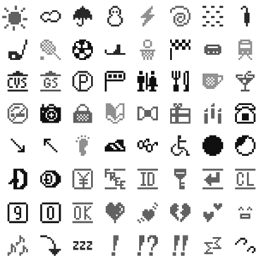
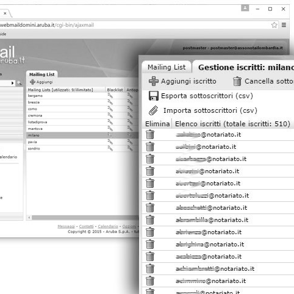
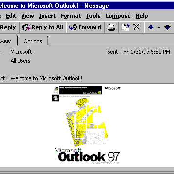
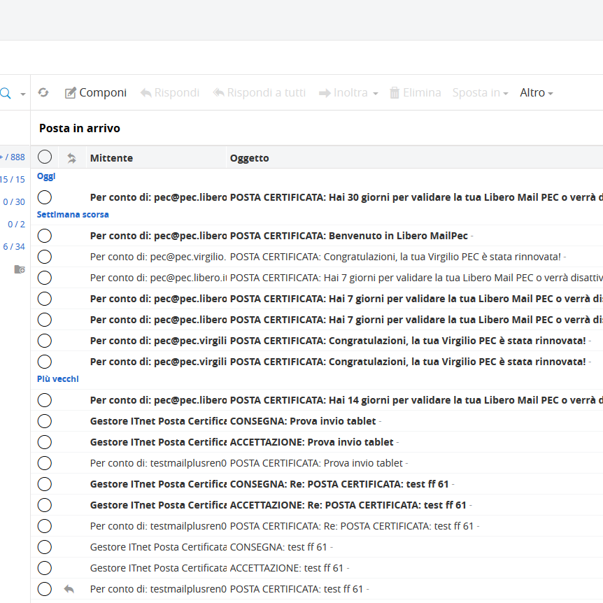

email
Con l’avvento di Internet ed i suoi collegamenti, si è avverata la possibilità di comunicare a distanza inviandosi messaggi. Oggi, chiunque è costantemente vittima ed arteficie di una vera e propria pioggia di email.
Origini del nome
Risolvere un problema
Successo meritato
La posta elettronica, in inglese e-mail o email (abbreviazione di electronic mail), è un servizio Internet grazie al quale ogni utente abilitato può inviare e ricevere dei messaggi utilizzando un computer o altro dispositivo elettronico (come palmare, smartphone, tablet) connesso in rete attraverso un proprio account di posta registrato presso un fornitore del servizio. È la controparte digitale ed elettronica della posta ordinaria e cartacea.
L’uomo ha sempre avuto bisogno di comunicare, soprattutto quando il destinatario del proprio messaggio si trova a decine e decine di chilometri di distanza. ARPANET, il progetto portato avanti dal Ministero della Difesa statunitense, ha per primo dato avvio alla risoluzione della difficoltà. L’email è diventata lo strumento più utilizzato per comunicare a distanza: spedire un messaggio di posta elettronica ad un amico, collega o superiore è una delle tante azioni quotidiane che compiamo, inconsapevoli di ciò che ci sia dietro.
La chiave di successo dell’email è la semplicità: intuitiva, veloce, economica e sempre disponibile sono queste le caratteristiche che la rendono il più utilizzato mezzo di comunicazione diretta. In pochi secondi viene inviata senza costi aggiuntivi, e non necessita che il destinatario sia disponibile a rispondere al momento della ricezione. Per questi motivi rappresenta un ottimo strumento di marketing: economico, istantaneo e permette di girare contemporaneamente lo stesso messaggio ad una moltitudine (broadcast) oppure di creare un rapporto uno a uno (bidirezionale).
Com’è nata l’email, detta anche posta elettronica?
1930
Gli antenati
Telegrafo e Telex servivano per inviare messaggi da lunghe distanze. Sebbene questi strumenti non somiglino minimamente alla moderna email, possono essere considerati gli antenati dei messaggi di posta elettronica.
1965
Mailbox
Alcuni ricercatori del MIT di Boston sviluppano MAILBOX, un software che permetteva di inviare messaggi agli altri studenti o ricercatori dell’Università. Purtroppo il programma non funziona benissimo: i messaggi vengono salvati solamente sul computer dove sono scritti: il destinatario del messaggio per poterlo leggere deve accedere a MAILBOX dallo stesso terminale.
1971
Ray Tomlinson
Il ricercatore Ray Tomlinson sviluppa un software che permette di far comunicare le diverse persone che lavorano ad ARPANET utilizzando il computer, e nasce così l’email. QWERTYUIOP sono sia le prime dieci lettere della tastiera che, secondo una leggenda del web, il testo del primo messaggio di posta elettronica inviato da Tomlinson. Lo sviluppatore statunitense studia anche la forma dell’indirizzo di posta elettronica, e reinterpreta il simbolo chiocciola.
La CHIOCCIOLA indica oggi il dominio che ospita la casella di posta elettronica. Ha origini nel medioevo, dove gli amanuensi lo utilizzavano al posto della preposizione di luogo latina “ad”, e più tardi fu impiegato nei mercati fiorentini del ‘500 per indicare l’anfora, un’antica unità di misura. Solo negli anni ‘70 Tomlinson pensò di inserirlo tra il nome del destinatario e il percorso per arrivare al server ospite, avvalendosi così del significato originario del glifo, ovvero letteralmente “presso”.
1975
Caselle differenziate
Shiva Ayyadurai progetta la suddivisione delle caselle di posta elettronica in “messaggi in entrata” e “messaggi in uscita”. Ciò permette un’organizzazione più razionale e chiara delle email, oltre che una suddivisione più netta della conversazione tra mittente e destinatario. D'ora in avanti tracciare le email diventa decisamente più facile e fattibile.

1980
Emoticon
Fanno il loro debutto le emoticon, utilizzate nei messaggi per esprimere il proprio stato d’animo, in principio puramente testuali. Le prime emoji a simbolo risalgono solo al 1999, create da Shigetaka Kurita. Da allora esse permettono di utilizzare un linguaggio più affine alla fisiognomica e di comunicare dei messaggi più vicini alla comunicazione non verbale.
1985
ISP
Con l’arrivo dei primi Internet Service Provider, avviene il passaggio da programma utilizzato solamente all’interno di ARPANET a strumento diffuso in tutto il mondo. Gli ISP hanno permesso all’email di divenire un vero e proprio mezzo di comunicazione globale, garantendo una connessione capillare tra le persone sparse ovunque per il mondo. L’email pone fine alle lunghe file davanti al fax, riduce l’uso di fotocopiatrici e di comunicazioni via telefono.
1988
Primi client
Nascono Eudora, Pegasus Mail, Lotus Notes: alcuni tra i primi client di posta, ossia programmi per la gestione, composizione, trasmissione, ricezione e organizzazione di e-mail. Ad esempio, Eudora è uno dei primi programmi di posta elettronica creati e resi pubblici gratuitamente (freeware), con un'interfaccia grafica appositamente realizzata. La prima versione fu scritta da Steve Dorner.
1990
Mailing list
Nascono le prime Mailing list, ovvero dei gruppi di discussione che utilizzano la posta elettronica per comunicare tra di loro (gli antenati dei gruppi su WhatsApp). Letteralmente "lista di corrispondenza", è intesa sia come lista di distribuzione e diffusione che come lista di discussione. Nello specifico è un sistema organizzato per la partecipazione di più persone ad una discussione asincrona o per la distribuzione di informazioni utili agli interessati/iscritti attraverso l'invio in multicast di email ad una lista di indirizzi di posta elettronica di utenti iscritti.


1992
Client moderni
Debutta Microsoft Outlook, il primo servizio e client di posta elettronica moderno. La storia del software Microsoft Outlook inizia con il rilascio di Outlook per MS-DOS. Questa versione originale è ben lontana dallo strumento multifunzionale di comunicazione e di gestione che è divenuta ora, punto fermo negli uffici di tutto il mondo.
1995
Spamming
Negli anni ’90, con l’uso più massiccio della posta elettronica prende vita il fenomeno fastidioso dello spamming. L’invio di messaggi a mittenti che non hanno autorizzato l’uso del proprio indirizzo diventa in pochi anni una piaga del web. La parola SPAM deriva da una marca di carne di maiale in scatola (spiced ham) famosa in USA negli anni ’70 perché attuò una massiccia campagna pubblicitaria con invio continuo di volantini promozionali tramite posta.
Le junk mail (posta spazzatura) rappresentano una reale molestia digitale. Si possono combattere con software chiamati ANTISPAM, che i server email utilizzano per ridurre il carico di spam. Alcuni di questi rifiutano dei messaggi provenienti da server conosciuti come spammer (bloccaggio), altri analizzano in modo automatico il contenuto delle email ed eliminano o spostano quelli che sembrano spam (filtraggio). Il bloccaggio permette anche di ridurre la banda sprecata, rifiutando i messaggi prima che siano trasmessi, e viene preferita perché moltu trovano la tecnica del filtraggio troppo invadente nei riguardi della privacy.
2004
Posta Certificata
Viene ideata la posta elettronica certificata PEC, una e-mail particolare dotata dello stesso valore della raccomandata di ritorno. La PEC rende i documenti elettronici inviati validi sia legalmente che dal punto di vista amministrativo. Questo strumento negli anni ha avuto un ruolo sempre più importante per chiunque volesse interagire direttamente con la Pubblica Amministrazione.

2007
Gmail
Nasce Google mail, abbreviato Gmail, il servizio più tardivo ma che diventa in poco tempo il più utilizzato al mondo. Gmail è un servizio gratuito di posta elettronica fornito da Google. È possibile accedervi via web o tramite applicazioni che usano i protocolli POP3 ed IMAP.
Il protocollo
SMTP
I protocolli
IMAP e POP3
Il DNS
Quando clicchiamo sul pulsante di invio il client di posta elettronica o il servizio Web che stiamo utilizzando si collega al server SMTP (Simple Mail Transfer Protocol, un protocollo standard per la trasmissione di email) del nostro provider, comunicando con questo server su una determinata porta di comunicazione, normalmente la numero 25. I client mail, tuttavia, spesso inviano le mail in uscita al server sulla porta 587, per ridurre lo spam. L’SMTP è infatti un protocollo testuale semplice, nel quale vengono specificati l’indirizzo del mittente, quello del destinatario e il contenuto dell’email. Nel particolare analizza l’INDIRIZZO del destinatario e lo divide in nome utente (che precede il simbolo @) e dominio (che segue il simbolo @).
SMTP è un protocollo che permette soltanto di inviare messaggi di posta, ma non di richiederli ad un server: per fare questo il client di posta deve usare altri protocolli, quali POP3 (Post Office Protocol) e IMAP (Internet Message Access Protocol). Se il dominio coincide con quello del mittente, il server SMTP invia il messaggio al server POP3 che lo recapita al destinatario, utilizzando la porta 110.
Quando il dominio del destinatario è differente da quello del mittente, il server SMTP deve contattare il server DNS affinché quest’ultimo gli fornisca l’indirizzo IP corrispondente. Una volta ottenuta anche questa informazione, il server SMTP si connette al server del destinatario, che riconosce la casella postale corrispondente al nome utente e le email al server POP3 che le inserisce nella mailbox del ricevente.
I caratteri ASCII
e supporto MIME
Il protocollo base SMTP per la trasmissione di email, supporta solo caratteri ASCII a 7 bit. Questo di fatto limita le email a messaggi che, quando trasmessi, includono solo i caratteri sufficienti per scrivere in un numero limitato di lingue con alfabeto latino. Il MIME (Multipurpose Internet Mail Extension) definisce meccanismi atti a spedire altri tipi di informazione con l’email, potendo includere testo scritto in lingue diverse ad esempio dall’inglese usando codifiche diverse dall’ASCII, e contenuti o file binari come immagini, suoni e filmati, oppure programmi. Gli allegati vengono codificati per essere trasformati in semplici file di testo, gestiti allo stesso modo del messaggio. Quando l’email raggiunge il destinatario, l’allegato viene decodificato.
Esistono pericoli o limitazioni?
Gli errori
Le minacce
Le convenzioni
Cosa accade quando una email non viene recapitata? I problemi possono essere svariati: ad esempio, la casella di posta elettronica del destinatario è piena e il server POP3 non riesce a inserire in mailbox la missiva, oppure la casella non esiste più o, ancora, il server in uscita è così pieno di messaggi in coda per essere trasferiti che la nostra email viene inviata con immenso ritardo oppure non viene mai recapitata. Senza contare poi, che a volte, alcuni server pubblici finiscono in una black list a causa di attacchi spam e via discorrendo, per cui tutte le “lettere” inviate attraverso questi server rischiano di essere classificate dal destinatario come pubblicità indesiderata.
Con la posta elettronica, l’identità del mittente può essere falsificabile: chiunque può intestare il proprio mittente come direzione@fiat.it senza che il sistema lo impedisca. Inoltre, minacce comuni nell’uso di una piattaforma email sono riscontrabili in messaggi contenenti minacce informatiche come i malware (software maligni come virus, trojan, worm...). Il phishing è invece una pratica comune tra chi desidera rubare delle informazioni fornite direttamente dal proprietario: un vera e propria truffa informatica effettuata inviando un’email camuffandosi per qualcun altro, in cui si invita il destinatario a fornire dati riservati (come ad esempio il numero di carta di credito).
Esistono delle regole alla base della comunicazione via email, delle convenzioni universalmente accettate che rientrano nel concetto di netiquette. Il termine deriva dall’unione delle parole net ed etiquette: rappresenta una sorta di galateo dell’ambiente digitale, costituito dall'insieme delle regole che dovrebbero assicurare educazione e buon comportamento in rete. Essenzialità, ortografia, cordialità nel saluto, firma e cura di oggetto e corpo dell’email sono solo alcune delle convenzioni che dovrebbero essere adottate per una comunicazione corretta via posta elettronica.
Email — Atlante tecnologico
©Jessica Leonardi, SUPSI Corso di Interaction design, A.A. 2020-2021. Docenti: Andreas Gysin, Giovanni Profeta.


{kind=link}